請先備妥以下文件照片，並於上傳前務必檢查，以下錯誤 100% 會被退件：
📝 建議拍完照片後，務必放大檢視是否有模糊、反光或被切邊再上傳。
(1) 前往 MAX 官網 → 點「註冊」
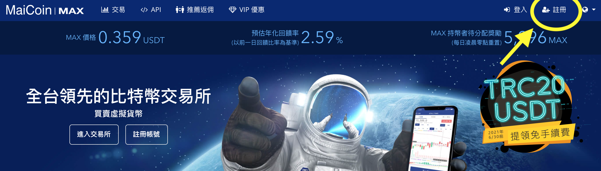輸入 Email + 密碼 → 閱讀條款並勾選後送出。
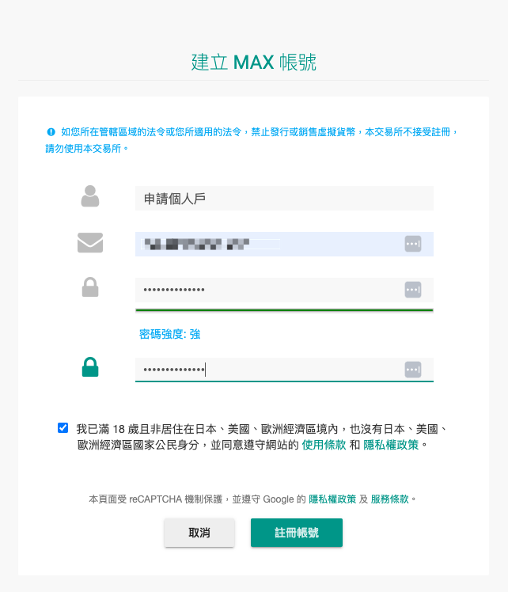(2) 成功後看到提示 → 請到信箱收驗證信
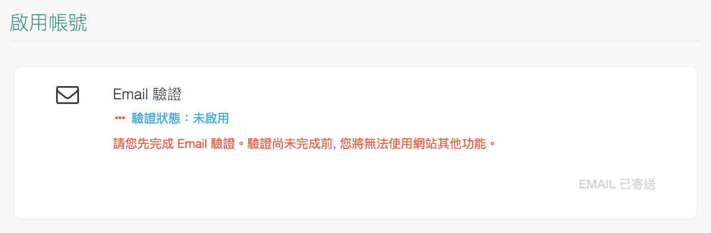(3) 點開信件內的連結 → 完成驗證並自動導向設定頁面
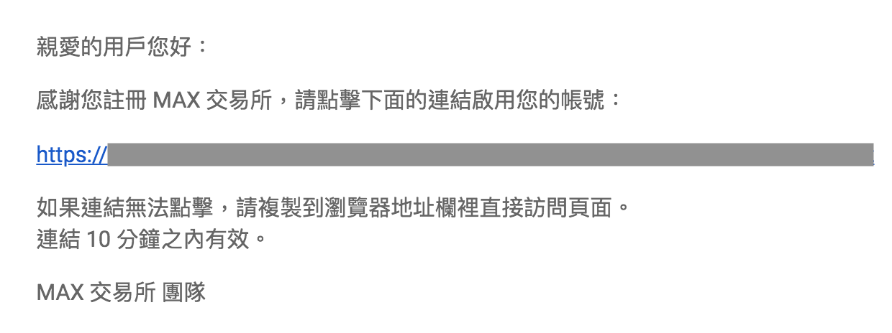 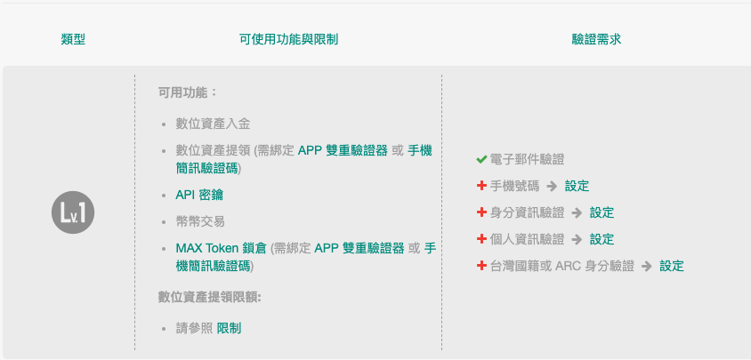(4) 在帳號設定 → 點「+ 手機號碼」
(5) 同樣在帳號設定 → 點「+ 身分資訊驗證」
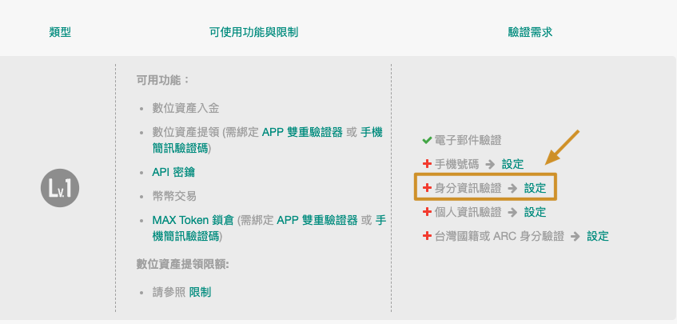填寫基本資料，如需發票可選手機條碼
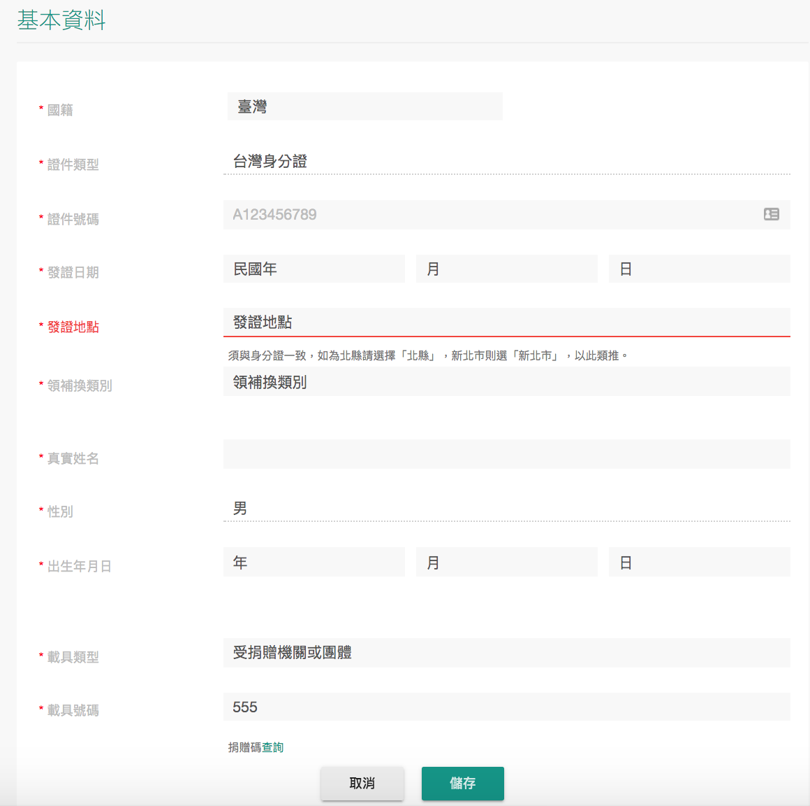(6) 點「+ 台灣國籍或 ARC 身分驗證」
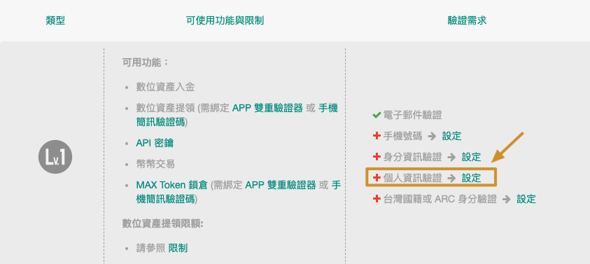開始上傳手持證件自拍照
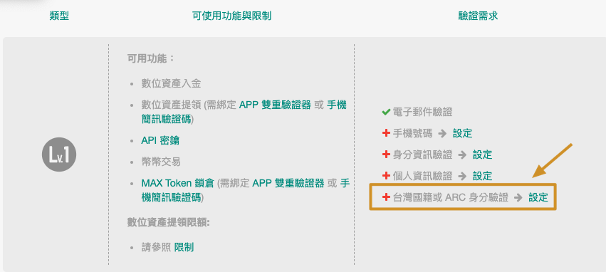✔ 拿身分證或 ARC 拍照，紙條需寫：「僅限 MAX 註冊使用 + 上傳日期」
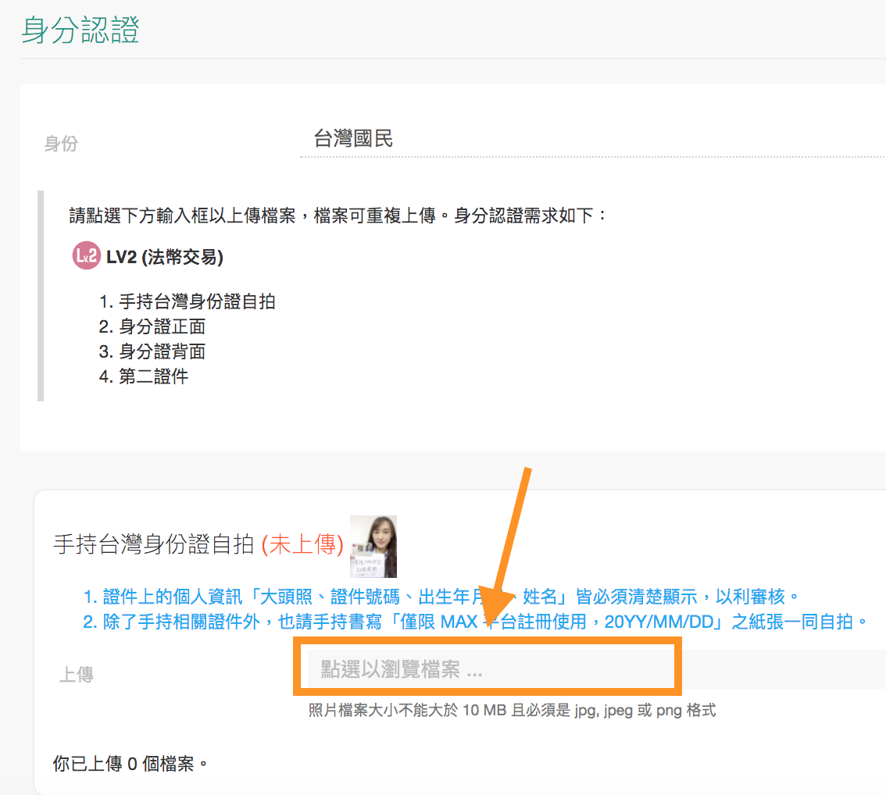接著上傳身分證正反面及第二證件
若要進行台幣入金，請完成銀行帳戶驗證：
(7) 點「+ 銀行帳號驗證」 → 填寫本人名下帳戶資訊
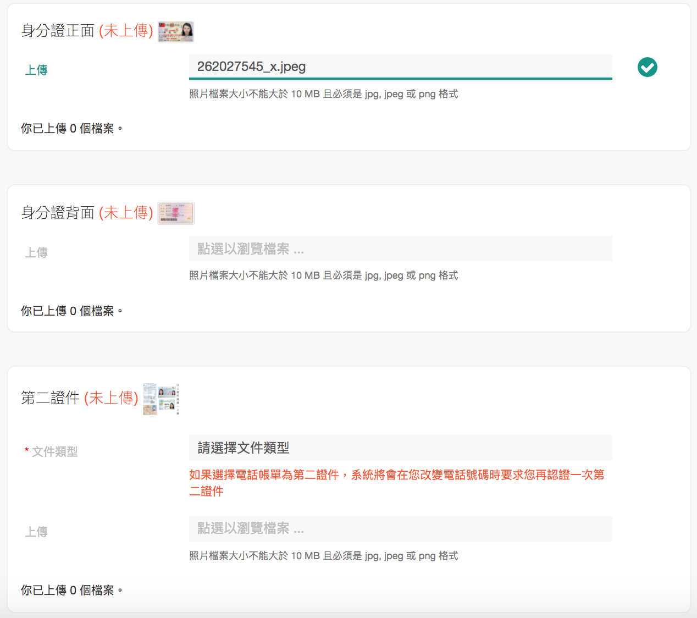 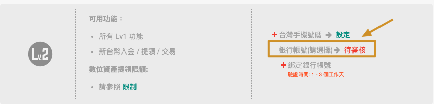完成後提交審核，系統將匯入 1 元做驗證
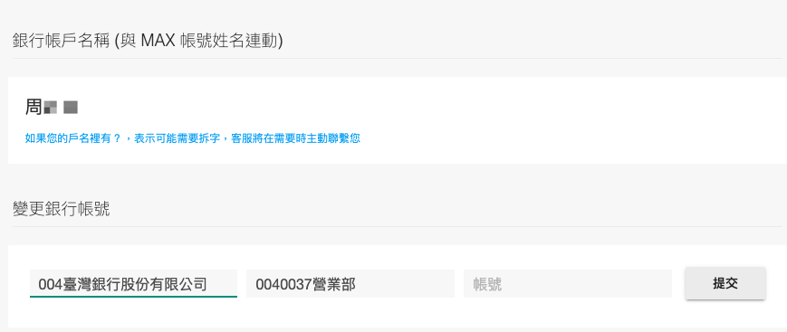完成後可前往「交易」頁面開始買幣！